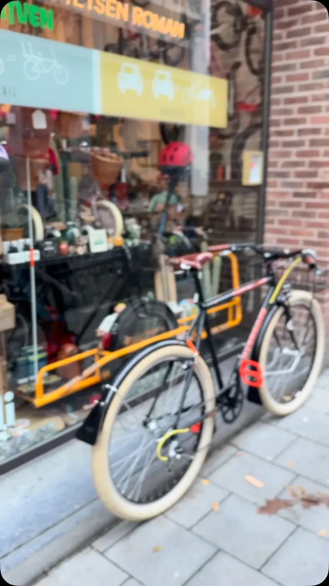
OmbouwSpecialized Hardrock
Een retro mountainbike, volledig omgebouwd tot trendy stadsfiets. Zoiets kom je niet elke dag tegen.
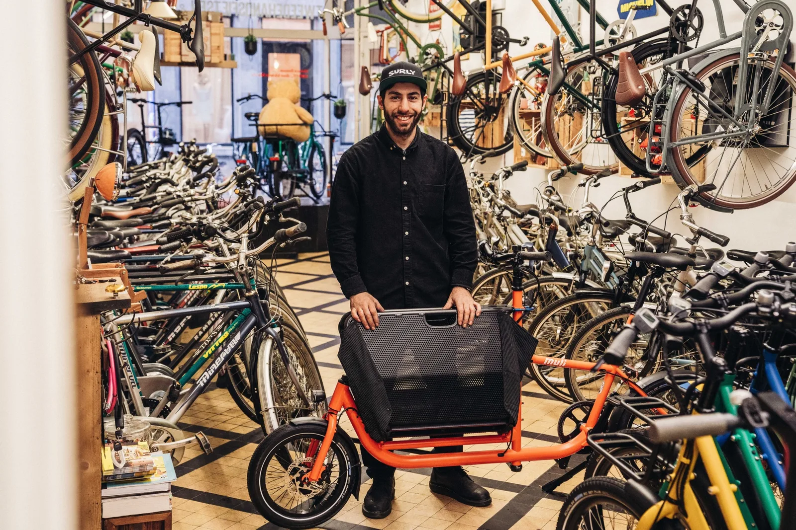
Herstellingen voor alle fietsen, eigenzinnige tweedehands met garantie en cargofietsen die je auto vervangen. Geen keten, geen leasing, geen klantnummers. Wel Roman.
Stadsfiets, koersfiets, cargo of een oude roestbak die je niet kwijt wil: Roman herstelt alle fietsen. Hij zegt je eerlijk wat nodig is, en wat niet.
“Hij repareert je fiets super snel, en hij is altijd klaar om je te helpen.”
“Vindt geen onnodige kosten en weet direct wat je nodig hebt!”
“Deed zelfs een beetje extra onderhoud, zonder extra kosten.”
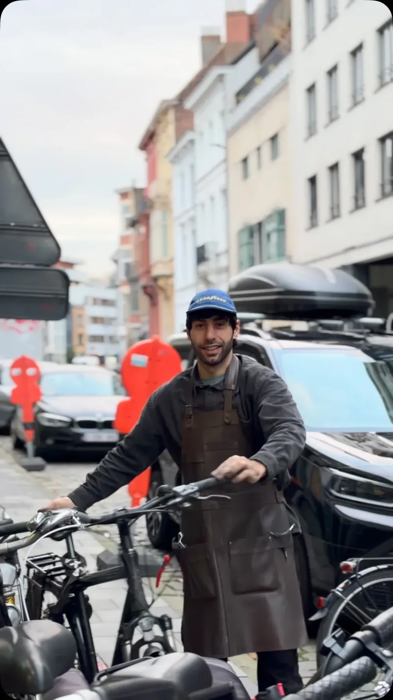
Roman zoekt gebruikte fietsen en maakt er hippe hebbedingen van. Elke fiets heeft een verhaal, en garantie. Eigenzinnige fietsen hebben een wieltje voor!

OmbouwEen retro mountainbike, volledig omgebouwd tot trendy stadsfiets. Zoiets kom je niet elke dag tegen.
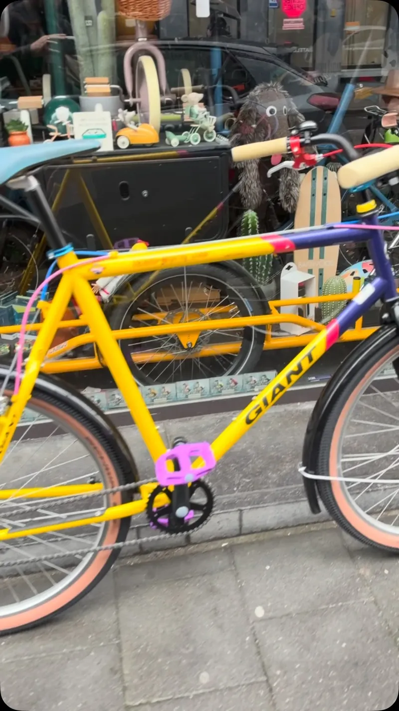
VerkochtGekocht van de eerste eigenaar. Twee uur bleef Roman bij hem, voor zijn mountainbikeverhaal.
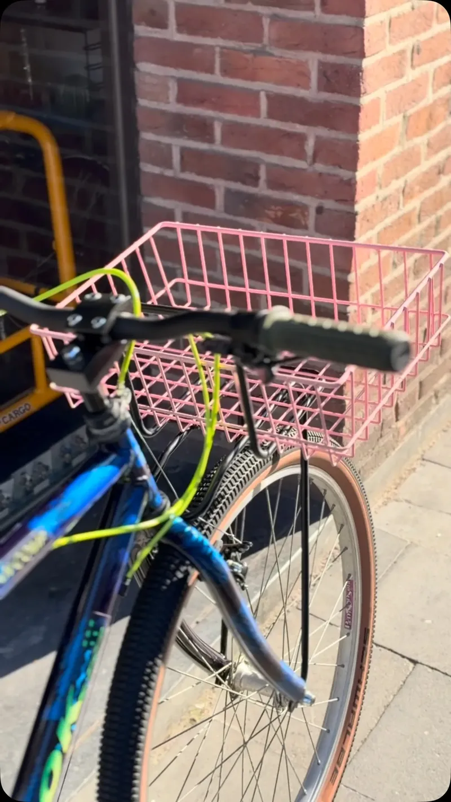
Gent-proofDikkere banden, dus minder kans dat je in de tramsporen blijft hangen. Ideaal voor Gent.
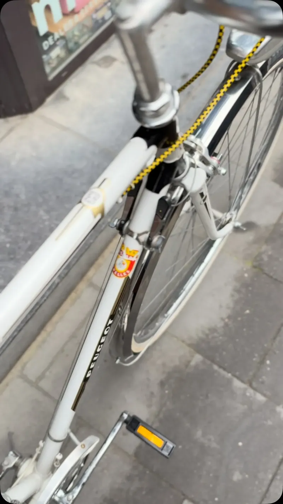
OrigineelZo origineel mogelijk gehouden. Kom langs, maak een testritje, en neem hem mee.
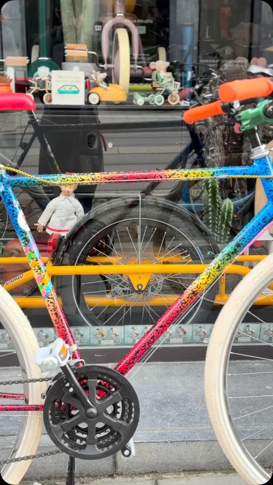
KleurHou je van kleur? Dan heeft Roman iets speciaals voor je gemaakt, met hart en ziel.
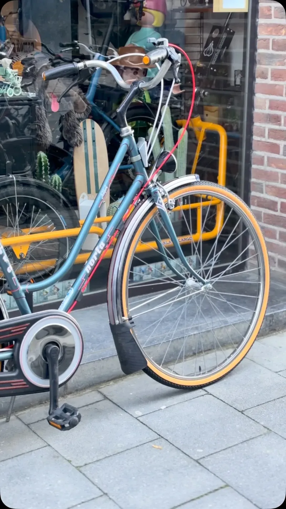
RetroVoor wie van retro houdt: een Belgische klassieker, helemaal van jou.
Elke dag nieuwe fietsen op Instagram
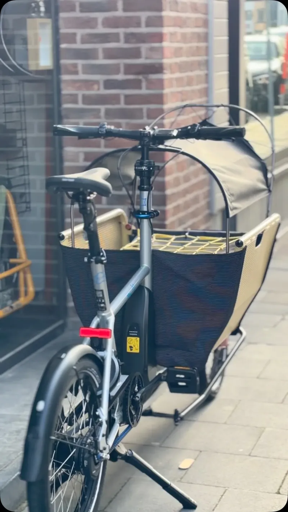
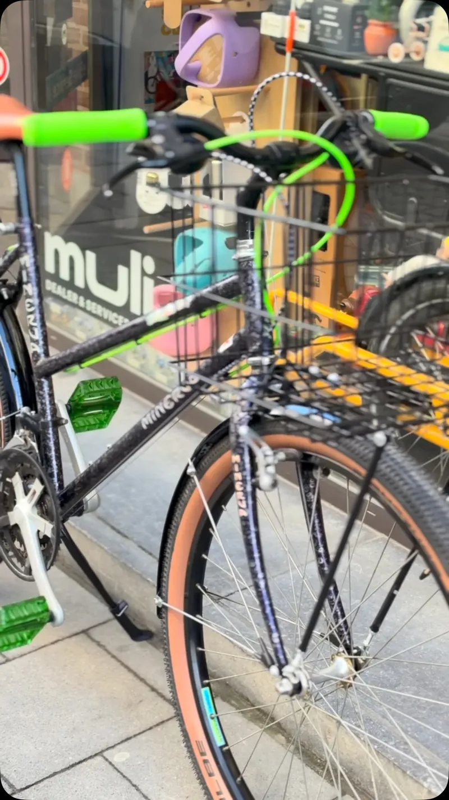
Longtails en cargofietsen zijn Romans specialiteit. Kinderen achterop, boodschappen voorin: een moderne longtail brengt je overal, in een mum van tijd, en parkeren is nooit een probleem.
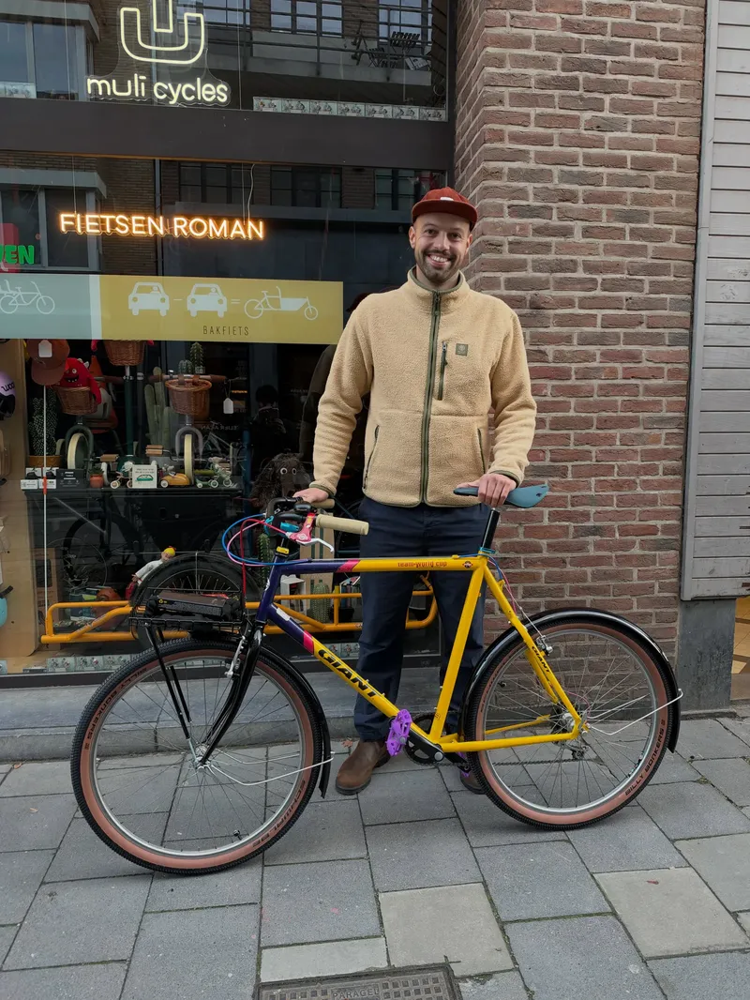
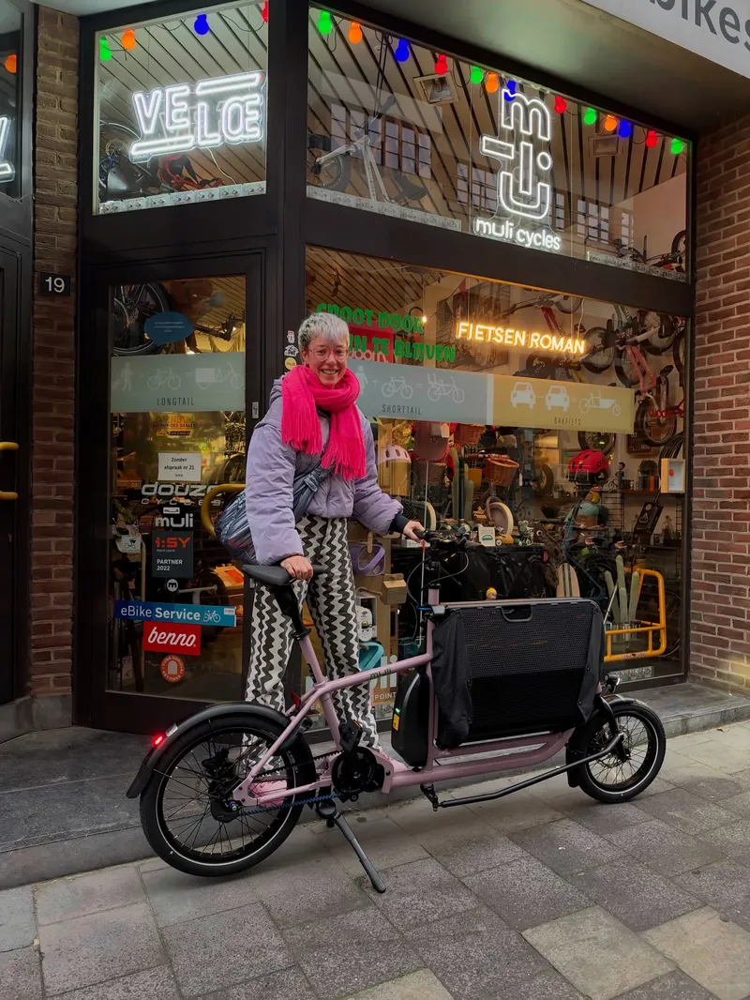
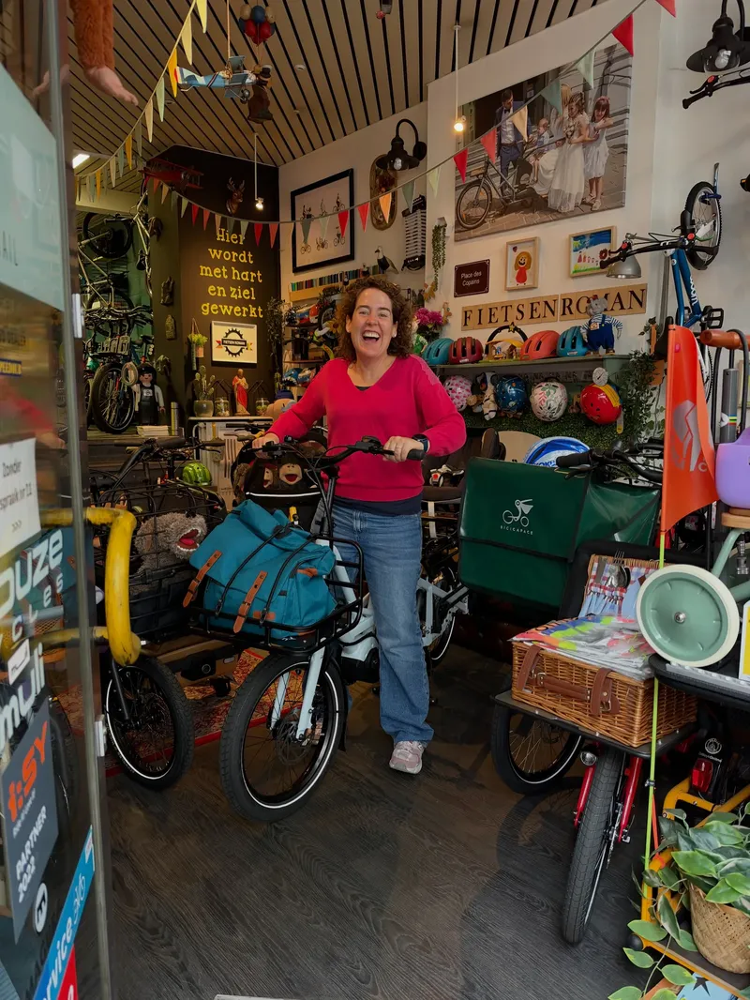
“Heel tevreden van Roman, ik heb mijn vaste fietsenmaker gevonden. Super vriendelijk, goede en snelle service. 10/10, dikke aanrader!”
“Dit is tot nu toe de allerbeste fietsenmaker die ik ooit heb gezien, hij is de GOAT. Een echte aanrader dus als je van Gent bent.”
“Beste fietsenmaker dat ik ooit gezien heb. Vindt geen onnodige kosten en weet direct wat je nodig hebt! vriendelijk + snelle herstelling TOP!”
“Top ervaring! Heel vriendelijke service door een goedlachse man en hij levert top werk!”
Aan de Kortrijksepoortstraat. Kijk naar de neonletters FIETSEN ROMAN in de etalage.
| Maandag | 10u tot 12u, 13u tot 18u |
| Dinsdag | gesloten |
| Woensdag | gesloten |
| Donderdag | 10u tot 12u, 13u tot 18u |
| Vrijdag | 10u tot 12u, 13u tot 18u |
| Zaterdag | 10u tot 12u, 13u tot 18u |
| Zondag | gesloten |
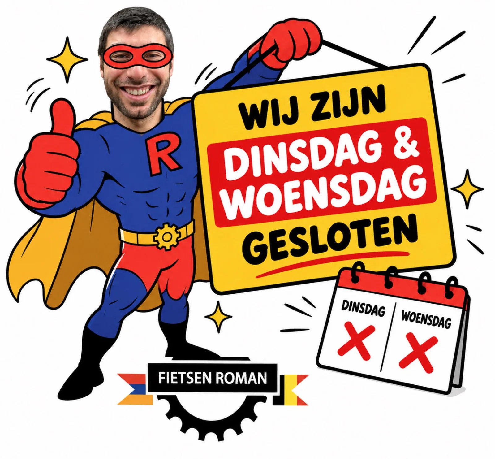
Onthoud het gewoon zo: dinsdag en woensdag rust de held uit.
Ik maakte deze demo voor jullie om te tonen wat er kan. Na een kort gesprek maak ik er iets veel persoonlijkers van, helemaal naar jullie wens.
Vrijblijvend. Ik kom langs of we bellen.
Op maat, op jullie eigen domein.
Geen voorschot. Jullie betalen pas als alles klaar is.
Hosting, domeinnaam en kleine wijzigingen, zoals nieuwe openingsuren.
Omdat een voorbeeld meer zegt dan een mail. Zo zien jullie meteen wat er kan, en het kost jullie niets.
Nee. Het gesprek is vrijblijvend. Vinden jullie het niks, dan is het daarmee gedaan.
Na ons gesprek staat jullie site binnen 10 tot 14 dagen online.
Zeker. Jullie domeinnaam kan gewoon blijven, de nieuwe site komt in de plaats van de oude.
Nee, dat doe ik op basis van ons gesprek. Eigen foto's zijn mooi meegenomen, maar niet nodig om te starten.